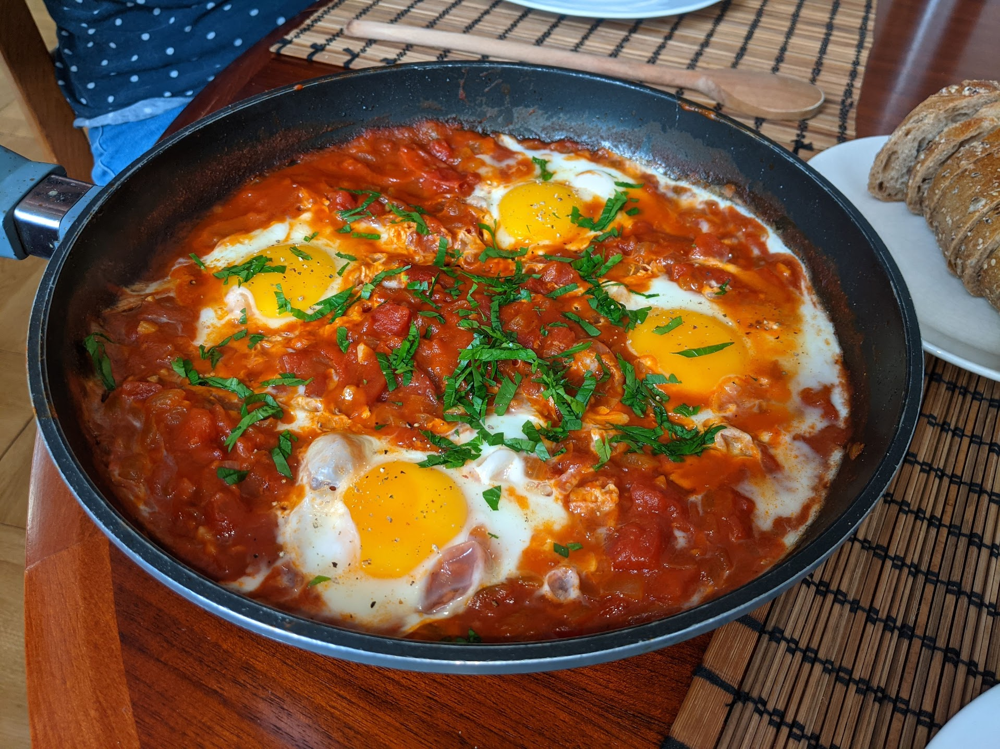

Shakshuka

Pour deux personnes :
- Une boîte de bonnes tomates concassées
- Deux oignons
- Deux gousses d'ail
- Quatre bons œufs
- Des épices (du genre piment, paprika, cumin, harissa…)
- Des herbes (du genre origan, romarin…)
- (facultatif) Un peu de persil frais
- Sel, poivre, huile d'olive
- Éplucher oignons et ail, et les couper en bouts irréguliers. Les faire cuire doucement dans une poêle avec une bonne cuillère d'huile d'olive.
- Ajouter les épices et les herbes sèches, puis quand les oignons sont fondants, ajouter la tomate et faire mijoter à feu moyen en touillant un peu. Saler, poivrer.
- Cinq minutes plus tard, arrêter de mélanger, et laisser cuire cinq minutes de plus.
- Balancer les œufs dans la poêle, sans mélanger, comme si on faisait des œufs
au plat. Faire cuire jusqu'à ce que le blanc soit blanc et le jaune tremblotant.
- Parsemer d'un peu de persil frais. Servir à même la poêle, en se servant des bouchées avec des cuillères en bois et du pain.
Retour à la liste des recettes